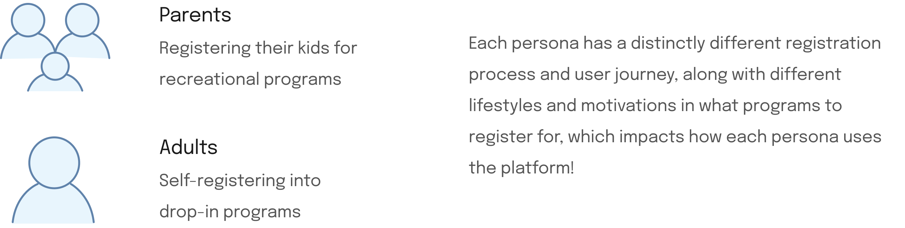
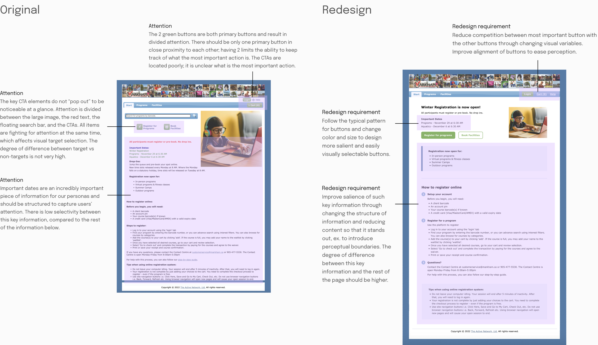
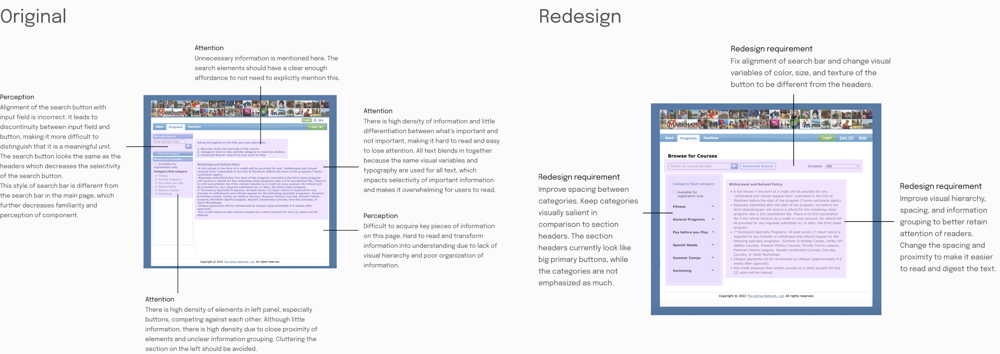
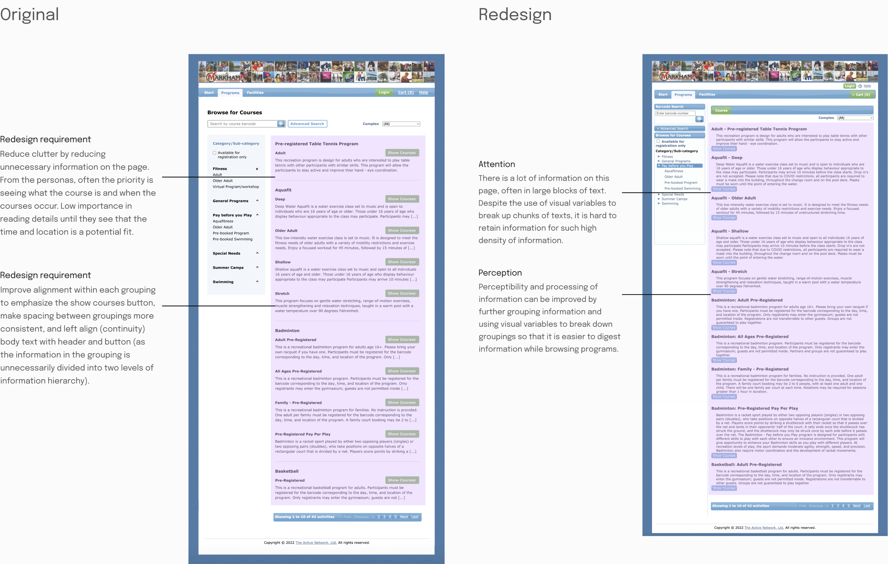
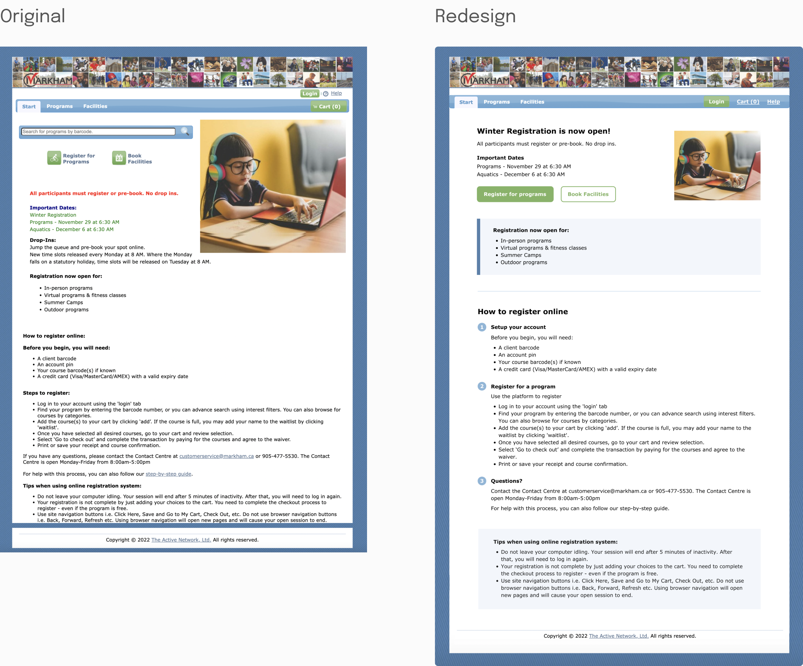
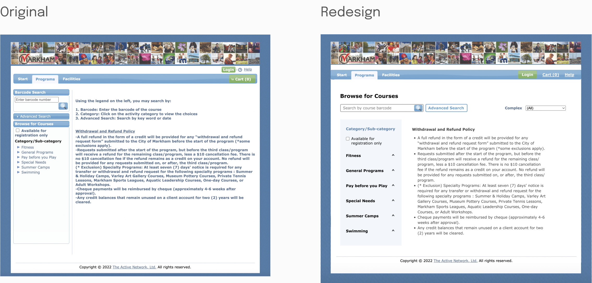
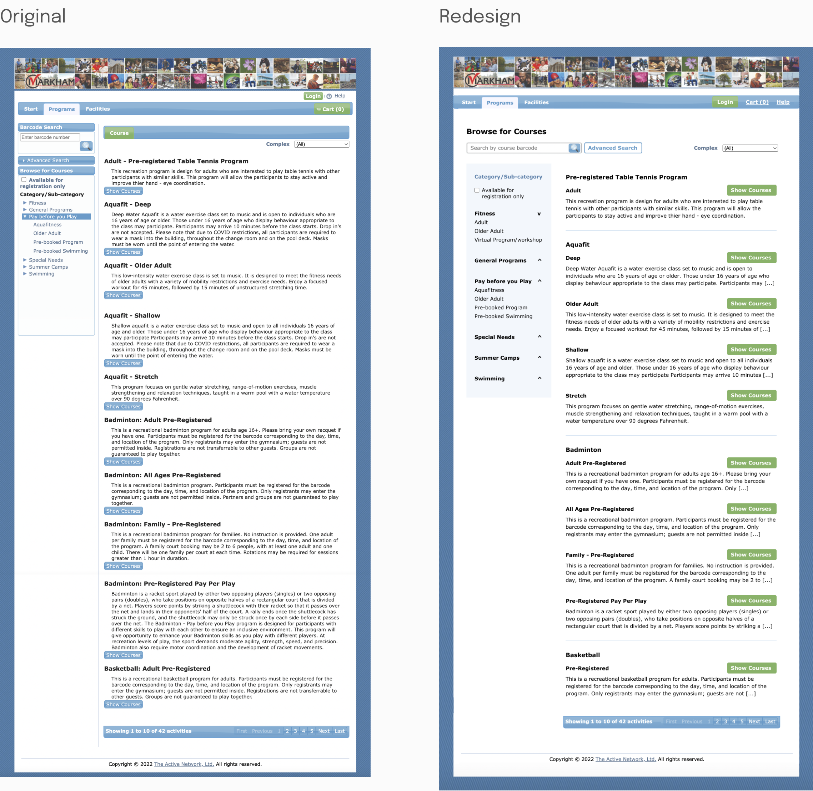

Registration portal UI cognition and perception redesign challenge
HCI passion project redesigning the City of Markham's program registration platform
Skills
Visual design
Interaction design
Application of HCI theories
Timeline
1 weekend in Fall 2022
Team
Solo
Current portal
The challenge
Evaluate and redesign, based only on the concepts of human cognition and perception
How might we apply human cognition principles to make positive changes to the user experience?
The process
01: Persona & user descriptions

02: Evaluation & redesign requirements
Start screen
Programs screen
Pay before you play screen
03: Final before & after shots
Start screen
Programs screen
Pay before you play screen
Reflection
Visually transforming content-heavy pages
This challenge enabled me to keep working on how I use visual variables of selectivity, pre-attentive processing, and degree of difference, to create more digestible and visually balanced pages!
×